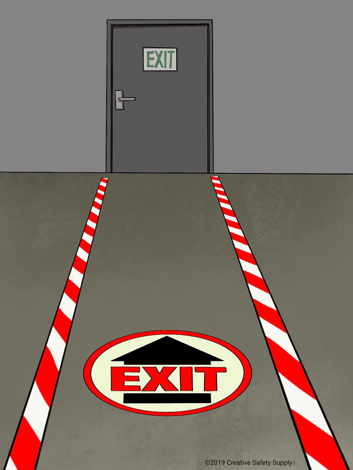
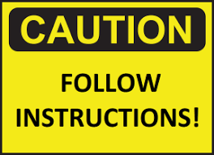

Step 1: Be Mindful of Surroundings
Stay aware of your surroundings and avoid placing objects or obstacles near exits that could block or impede egress pathways.
Step 2:Keep Exits Clear
Refrain from placing bags, backpacks, or other personal belongings in front of or near exits.
Ensure that exit doors, stairwells, and corridors remain unobstructed at all times.
Step 3: Do Not Block Exit Signs
Exit signs are essential for guiding individuals to safety during emergencies.
Avoid blocking or covering exit signs with objects, decorations, or other materials that may obscure visibility.
Step 4: Avoid Gathering Near Exits
Refrain from congregating or loitering near exits, especially during times of high traffic such as class changes or events. Keep exit pathways clear to allow for unobstructed evacuation routes.
Step 5: Follow Instructions
Pay attention to instructions provided by teachers, school staff, or emergency responders regarding exit locations and evacuation procedures.
Follow their guidance to ensure a safe and orderly evacuation
Step 6: Report Obstructions
If you notice any obstructions or hazards near exits, report them to school authorities or building management immediately.
This includes blocked doors, cluttered corridors, or any other conditions that could impede egress.
Step 7: Use Proper Storage
Store belongings, equipment, or supplies in designated areas away from exits and egress pathways.
Use lockers, shelves, or storage rooms to keep items organized and prevent them from obstructing exits.
Step 8: Avoid Propping Open Doors
Do not prop open exit doors with wedges, doorstops, or other objects.
Exit doors should remain closed to prevent unauthorized access and maintain security, but they must be easily operable in case of emergency.
Step 9: Practice Good Crowd Control
During events or gatherings, ensure that crowds are managed effectively to prevent congestion near exits.
Use barriers, signage, or staff members to direct traffic and maintain clear pathways for evacuation
Step 10:Lead by Example
Set a positive example for your peers by following exit safety guidelines and encouraging others to do the same.
By demonstrating responsible behavior, you help create a safer environment for everyone in your school or college